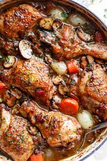

INGREDIENTS
- 2 ounces dried wild mushrooms (such as porcini or shiitake)
- 1 cup hot water
- 6 slices bacon
- 8 bone-in chicken thighs
- ¼ cup quick-mixing flour (such as Wondra), or as needed
- salt and ground black pepper to taste
- 1 bunch carrots, cut into matchstick-size pieces
- 2 cups fresh mushrooms
- ½ pound shallots, chopped
- 2 cloves garlic, chopped
- 1 (750 milliliter) bottle Burgundy red wine, divided
- 1 cup chicken broth
- 2 teaspoons herbes de Provence, tied into a cheesecloth bag
- 5 sprigs fresh thyme
- 3 bay leaves
- 1 tablespoon chopped fresh parsley, or as desired

INSTRUCTIONS
- Put dried mushrooms in a bowl and pour in hot water.
- Set aside until mushrooms are rehydrated.
- Place bacon in a large skillet.
- Cook over medium-high heat, turning occasionally, until evenly browned.
- Drain bacon slices on paper towels, reserving bacon grease in the skillet.
- Coat chicken thighs with flour and season with salt and pepper.
- Working in batches, cook chicken in the bacon grease over medium heat until browned, 2 to 3 minutes per side.
- Remove chicken thighs as they brown and place on a paper towel-lined plate.
- Drain dried mushrooms through cheesecloth, reserving liquid.
- Add drained mushrooms, carrots, fresh mushrooms, shallots, and garlic to skillet over medium-high heat; saute for 2 minutes.
- Pour 1 cup wine into the skillet and bring to a boil while scraping the browned bits of food off of the bottom of the skillet with a wooden spoon until liquid is reduced, about 10 minutes.
- Return chicken to the skillet and mix in remaining wine, chicken broth, herbes de Provence, thyme, and bay leaves.
- Liquid should partially cover chicken; if more liquid is needed, add reserved water from mushrooms.
- Cover skillet and simmer over low heat until chicken is no longer pink in the center, at least 1 hour.
- An instant-read thermometer inserted near the bone should read 165 degrees F (74 degrees C).
- Remove cover from skillet and simmer until sauce is thickened, about 15 minutes more.
- Add more quick-mixing flour to sauce to thicken, if desired.
- Crumble bacon over chicken and vegetables and garnish with parsley.